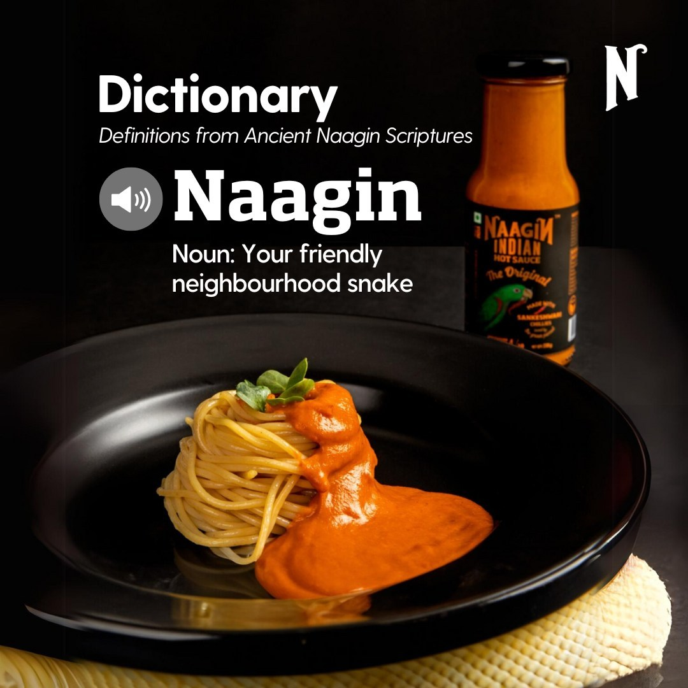

Naagin isn’t just a hot sauce—it’s a spellbinding experience, capturing the fiery essence of Indian
mythology and the mystique of transformation. Inspired by the mythical Naagin—a serpent, a
sorceress, a legend—this single post delves into the brand’s dark, gothic allure
For this design, I crafted an immersive visual that embodies the magic of spice with a deep, moody
aesthetic. The composition is anchored in a cold, dramatic color palette of midnight blues, shadowy
greens, and smoky grays, accented with glowing crimson tones to evoke the dangerous allure of the
Naagin. Serpentine textures entwine with hypnotic swirls, drawing the viewer into the enchantress's
lair.The typography mirrors the brand's bold personality, with sharp, gothic-inspired curves reminiscent
of snake scales. The Naagin herself takes center stage, a figure of transformation and power, with
glowing eyes and magical energy emanating from her hands, symbolizing the bold heat of the sauce.
This post celebrates Naagin as more than just a condiment—it’s a daring, transformative experience.
Every element, from the serpentine details to the spellbinding color gradients, was designed to
captivate and intrigue. Working on this project was a thrilling dive into the dark magic of flavor and
the mythic allure of the Naagin.
